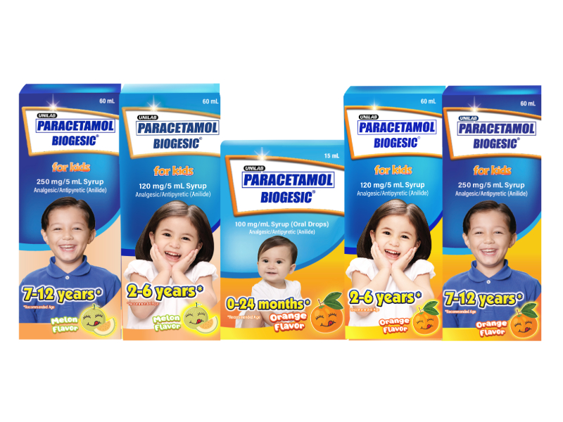
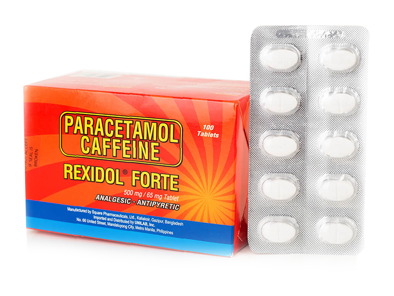
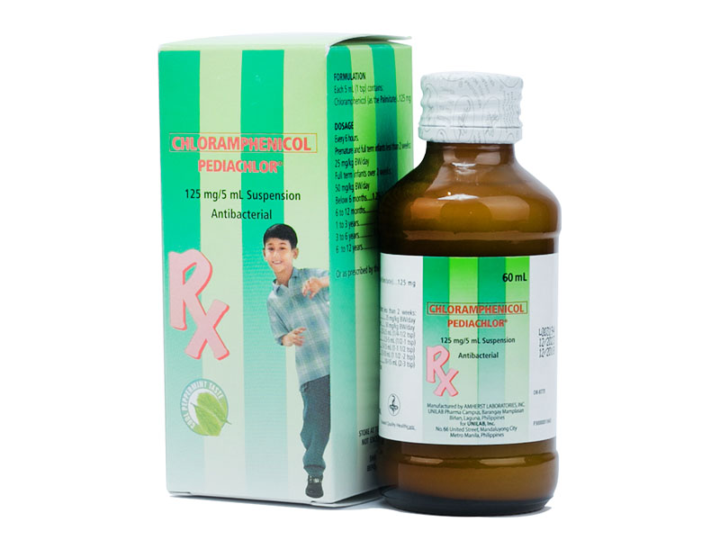
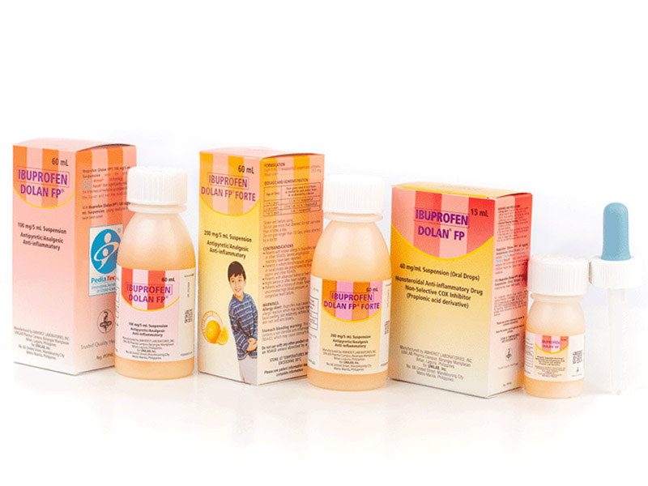
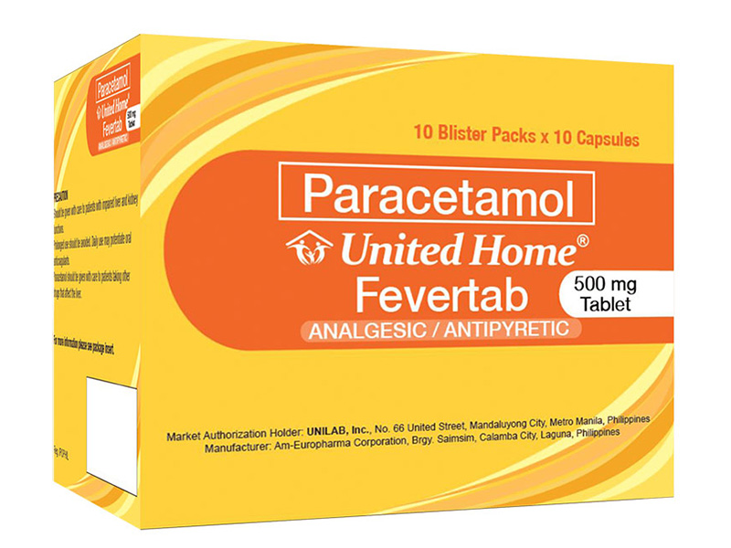

Medicine Guide For Fever

BIOGESIC
Description
A trusted brand of paracetamol, Paracetamol (Biogesic) is a medication that is typically used to relieve mild to moderate pain such as headache, backache, menstrual cramps, muscular strain, minor arthritis pain, toothache, and reduce fevers caused by illnesses such as the common cold and flu.Guide
What is the recommended daily dose of Biogesic® 500mg tablet for the treatment of headache? The recommended dose of Biogesic® 500mg for minor aches and pains such as headache is 1 to 2 tablets every 4 to 6 hours, as needed. Do not take more than 8 tablets (or 4 grams of paracetamol) in any 24-hour period.
TEMPRA
Description
Tempra® offers relief from fever and headache for both adults and children. Its active ingredient is paracetamol, and its syrup form is available in several child-friendly flavors.Guide
Tablet: Each tablet contains 325 mg of Paracetamol.Forte Tablet: Each tablet contains 500 mg of Paracetamol.
Syrup: Each teaspoonful (5 mL) contains 120 mg of Paracetamol.
Ingredients: Acetaminophen (paracetamol), sorbitol solution, polyethylene glycol, flavors, sodium benzoate, methyl paraben, sucralose, anhydrous citric acid, FD&C yellow no. 6 (orange flavor), FD&C red no. 40 (strawberry flavor), purified water. Forte Syrup: Each teaspoonful (5 mL) contains 250 mg of Paracetamol. Ingredients: Acetaminophen (Paracetamol), sorbitol solution, sucralose, methyl paraben, polyethylene glycol, benzoic acid, sweetener (orange flavor), anhydrous citric acid, sodium benzoate, flavors, FD&C yellow no. 6 (orange flavor), FD&C red no. 40 (strawberry flavor), purified water.
Oral drops: Each mL contains 100 mg of Paracetamol.
Ingredients: Polyethylene glycol, sorbitol, sucralose, sodium benzoate, citric acid, flavor, methyl paraben, FD&C yellow no. 6 (orange flavor), FD&C red no. 40 (strawberry flavor), purified water.

BIOFLU
Description
This medicine is used for the relief of clogged nose, runny nose, cough from postnasal drip, itchy and watery eyes, sneezing, headache, sore throat, body aches, and fever associated with the common cold, allergic rhinitis, sinusitis, flu and other minor respiratory tract infections.Guide
SRP is Php 8.00/caplet. What is the correct dosage? For children and adults over 12 years old, take 1 caplet every 6 hours, or as recommended by a doctor. For children aged 7 to 12 years old, take 10 mL (2 teaspoonsful Children's Bioflu®) every 6 hours, or as recommended by a doctor.

0-3 months - 0.3 to 0.6 mL
4-6 months - 0.6 to 1 mL
7 months under 1 year - 1 mL
1-2 years - 1 to 1.2 mL
1-2 years - 5 mL
3-6 years - 5 to 10 mL
7-10 years - 10-15 mL
Or, as prescribed by a physician. Shake well before use. Follow with water.
BIOGESIC FOR KIDS
Description
Biogesic® is the BEST-TASTING paracetamol fever medicine for kids 0-12 years old. It is easy to give to the child to ensure that the child gets the proper dose to bring down fever fast. It is safe and can be given even to children with fever due to dengue or post immunizationGuide
Dosing in Children: 10mg/kg body weight dose given every 4 to 6 hours, as needed; or, you can follow the dose below:0-3 months - 0.3 to 0.6 mL
4-6 months - 0.6 to 1 mL
7 months under 1 year - 1 mL
1-2 years - 1 to 1.2 mL
1-2 years - 5 mL
3-6 years - 5 to 10 mL
7-10 years - 10-15 mL
Or, as prescribed by a physician. Shake well before use. Follow with water.

For fast relief of different types of pain
Rexidol® Forte, BILIS-BANAT SA APAT: binat/bughat, sakit ng ulo, sakit ng katawan, o lagnat. Works in as fast as 30 minutes
Sa iba’t ibang sakit, isang bilis-banat na Rexidol® Forte ang katapat!
ASC Ref. U003P091421RS
REXIDOL
Description
Rexidol® ForteFor fast relief of different types of pain
Rexidol® Forte, BILIS-BANAT SA APAT: binat/bughat, sakit ng ulo, sakit ng katawan, o lagnat. Works in as fast as 30 minutes
Sa iba’t ibang sakit, isang bilis-banat na Rexidol® Forte ang katapat!
ASC Ref. U003P091421RS
Guide
Adults and children 12 years and above: 1-2 tablets every 6 hours, as needed for pain and/or fever, or, as directed by a doctor. Missed dose: If a dose is missed, give the next dose for pain and/or fever and the subsequent doses every 6 hours thereafter. Do not double the dose.
NAFARIN-A
Description
Nafarin®-AThis medicine is used for the relief of clogged nose, runny nose, postnasal drip, itchy and watery eyes, sneezing, headache, body aches, and fever associated with the common cold, allergic rhinitis, sinusitis, flu, and other minor respiratory tract infections.
Guide
Adults and Children 12 years and older: Orally, 1 tablet every 6 hours, or, as recommended by a doctor.For more information on safety, precaution and other information about this product, please see the Patient Information Leaflet.

For typhoid fever caused by susceptible S.typhi; meningeal infections caused by H. influenzae; serious infections caused by susceptible strains of Salmonella, Rickettsiae, or Chlamydia; bacteremia, meningitis or other serious infections caused by aerobic and anaerobic gram negative bacteria which are resistant to all other appropriate anti-infective agents; and cystic fibrosis.
PEDIACHLOR
Description
DESCRIPTION PEDIACHLOR® is Pediatrica's brand of Chloramphenicol Palmitate, found to possess marked antimicrobial effectiveness against gram-positive and gram-negative bacteria, including large viruses and rickettsiae. PHARMACOKINETICS PEDIACHLORⓇ is rapidly absorbed from the gastrointestinal tract.For typhoid fever caused by susceptible S.typhi; meningeal infections caused by H. influenzae; serious infections caused by susceptible strains of Salmonella, Rickettsiae, or Chlamydia; bacteremia, meningitis or other serious infections caused by aerobic and anaerobic gram negative bacteria which are resistant to all other appropriate anti-infective agents; and cystic fibrosis.
Guide
For more information on safety, precaution and other information about this product, please see the Product Insert.

5 to 10 mg/kg body weight per dose given every 6 to 8 hours, or, as directed by a doctor.
Dose given every 6 to 8 hours as needed for pain and/or fever, or, as directed by a doctor.
Infants:
0-2 months - 0.5-1 mL Ibuprofen (Dolan® FP) 100 mg/2.5 mL Suspension (Oral Drops)
3-5 months - 1-1.5 mL Ibuprofen (Dolan® FP) 100 mg/2.5 mL Suspension (Oral Drops)
6-12 months - 1.5-2 mL Ibuprofen (Dolan® FP) 100 mg/2.5 mL Suspension (Oral Drops)
children:
1-2 years - 5 mL(1 teaspoonful) Ibuprofen (Dolan® FP) 100 mg/5 mL Suspension 2.5 mL Ibuprofen (Dolan® FP Forte) 200 mg/5 mL Suspension
2-6 years - 5-10 mL(1-2 taespoonful) Ibuprofen (Dolan® FP) 100 mg/5 mL Suspension 2.5 mL Ibuprofen (Dolan® FP Forte) 200 mg/5 mL Suspension
7-12 years - 10 mL(2 teaspoonful Ibuprofen (Dolan® FP) 100 mg/5 mL Suspension 5 mL Ibuprofen (Dolan® FP Forte) 200 mg/5 mL Suspension
IBUPROFEN DOLAN
Description
For Ibuprofen 100 mg/5 mL and 200 mg/5 mL Suspension: For the relief of mild to moderate aches and pains due to: Dental pain including teething pain, toothache; Headache including migraine, neuralgia (painful disorder of the nerves); Muscular aches including sprains and strains, minor arthritis pain, backache ( ...Guide
Recommended oral dose in children:5 to 10 mg/kg body weight per dose given every 6 to 8 hours, or, as directed by a doctor.
Dose given every 6 to 8 hours as needed for pain and/or fever, or, as directed by a doctor.
Infants:
0-2 months - 0.5-1 mL Ibuprofen (Dolan® FP) 100 mg/2.5 mL Suspension (Oral Drops)
3-5 months - 1-1.5 mL Ibuprofen (Dolan® FP) 100 mg/2.5 mL Suspension (Oral Drops)
6-12 months - 1.5-2 mL Ibuprofen (Dolan® FP) 100 mg/2.5 mL Suspension (Oral Drops)
children:
1-2 years - 5 mL(1 teaspoonful) Ibuprofen (Dolan® FP) 100 mg/5 mL Suspension 2.5 mL Ibuprofen (Dolan® FP Forte) 200 mg/5 mL Suspension
2-6 years - 5-10 mL(1-2 taespoonful) Ibuprofen (Dolan® FP) 100 mg/5 mL Suspension 2.5 mL Ibuprofen (Dolan® FP Forte) 200 mg/5 mL Suspension
7-12 years - 10 mL(2 teaspoonful Ibuprofen (Dolan® FP) 100 mg/5 mL Suspension 5 mL Ibuprofen (Dolan® FP Forte) 200 mg/5 mL Suspension

For the relief of minor aches and pains such as headache, backache, menstrual cramps, muscular aches, minor arthritis pain, toothache, and pain associated with the common cold and flu;
For fever reduction.
Do not take more than 4g (8 tablets) of paracetamol in each 24-hour period.
For more information on safety, precaution and other information about this product, please see the Patient Information Leaflet.
UNITED HOME-FEVERTAB
Description
Ang United Home® ay sulit at maaasahang linya ng bitamina at gamot para sa buong pamilya. Ito ay pinagkakatiwalaan dahil sa abot-kaya at dekalidad na mga produkto nito tulad ng bitamina, gamot at ointments para siguradong alaga ang buong pamilya sa bawat tahanan.For the relief of minor aches and pains such as headache, backache, menstrual cramps, muscular aches, minor arthritis pain, toothache, and pain associated with the common cold and flu;
For fever reduction.
Guide
Adults and children 12 years old and above: 1 to 2 tablets every 4 – 6 hours, as needed for pain and/or fever, or as directed by a doctor.Do not take more than 4g (8 tablets) of paracetamol in each 24-hour period.
For more information on safety, precaution and other information about this product, please see the Patient Information Leaflet.